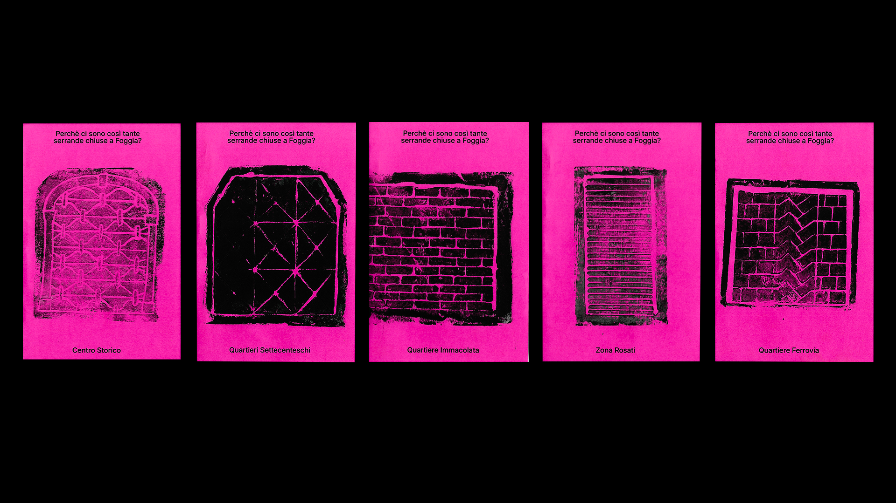

It all started with a simple question: Why are there so many shuttered stores in Foggia?
During the workshop, participants explored the city in small groups, touring various neighborhoods in the downtown area and mapping out properties for rent or for sale.
Through direct observation, the collection of materials, and group discussion, a collaborative investigation emerged that eventually took shape as a published work.
The project provided a more informed perspective on the transformations taking place in the city center, highlighting a phenomenon that is often invisible but reveals a great deal about the city’s social, economic, and cultural well-being.
Social research + Editorial
2026
MOUE 2026
